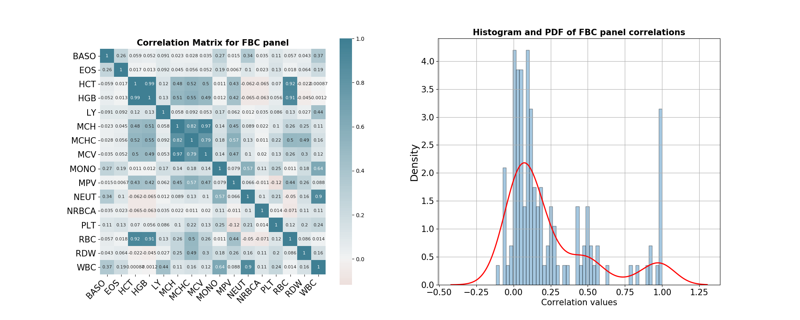

Note
Click here to download the full example code
Pathology Data¶
Out:
Sorted mean correlation values by biomarkers:
MCHC 0.382059
MCV 0.339479
MCH 0.333648
HCT 0.310809
HGB 0.309879
RBC 0.287938
WBC 0.284212
MPV 0.264828
MONO 0.247071
NEUT 0.224800
RDW 0.203640
PLT 0.175753
BASO 0.174066
LY 0.162445
EOS 0.141364
NRBCA 0.086158
dtype: float64
5 6 7 8 9 10 11 12 13 14 15 16 17 18 19 20 21 22 23 24 25 26 27 28 29 30 31 32 33 34 35 36 37 38 39 40 41 42 43 44 45 46 47 48 49 50 51 52 53 54 55 56 57 58 59 60 61 62 63 64 65 66 67 68 69 70 71 72 73 74 75 76 77 78 79 80 81 82 83 84 85 86 87 88 89 90 91 92 93 94 95 96 97 98 99 100 101 102 103 104 105 106 107 108 109 110 111 112 113 114 115 116 117 118 119 120 121 122 123 124 125 126 127 128 129 | # Import
import numpy as np
import pandas as pd
import seaborn as sns
import matplotlib.pyplot as plt
import warnings
warnings.filterwarnings("ignore")
# DataBlend library
from pkgname.utils.widgets import TidyWidget
# ------------------------
# Data handling
# ------------------------
# Define FBC panel and interest biochemical markers
FBC_codes = ["EOS", "MONO", "BASO", "NEUT", "RBC", "WBC",
"MCHC", "MCV", "LY", "HCT", "RDW", "HGB",
"MCH", "PLT", "MPV", "NRBCA"]
INTEREST_cols = ["_uid","dateResult", "orderCode", "result", "unit", "unitRange"]
# Parameters
index = ['_uid', 'dateResult', 'orderCode']
value = 'result'
# Function to sort by pid, datetime value
def change_pid_datetime_format(df):
df['pid'] = df['_uid'].str.extract('(\d+)').astype(int)
pid_col = df.pop('pid')
df.insert(0, 'pid', pid_col)
df.drop('_uid', inplace=True, axis=1)
df.sort_values(by=['pid', 'dateResult'], inplace=True)
return df
# --------------------
# Main
# --------------------
# Import feature vector of biochemical markers and FBC panel results
path_data = '../load_dataset/datasets/pathology-sample-march-may.csv'
data = pd.read_csv(path_data, usecols=INTEREST_cols)
data = data.loc[data['orderCode'].isin(FBC_codes)]
data = data.dropna() # drop records of patients with NaN _uid
data.reset_index(drop=True, inplace=True)
# Create widget
widget = TidyWidget(index=index, value=value)
# Transform (keep all)
transform, duplicated = \
widget.transform(data, report_duplicated=True)
# Set pid for each patient and sort accordingly
transform_fmt = change_pid_datetime_format(transform)
# Transform (keep first)
transform_first = \
widget.transform(data, keep='first')
# Set pid for each patient and sort accordingly
transform_first_fmt = change_pid_datetime_format(transform_first)
biomarkers_df = transform_fmt.iloc[:,2:]
# Obtain the correlation matrix for the biomarkers
corr_mat = biomarkers_df.dropna().corr()
# Print the mean correlation value for each biomarker
print("\nSorted mean correlation values by biomarkers:")
print(corr_mat.mean(1).sort_values(ascending=False))
# Plot seaborn heatmap, histogram and PDF of correlation values.
plt.figure(figsize=(20,8))
plt.subplot(1,2,1)
plt.title('Correlation Matrix for FBC panel', fontweight='bold', fontsize=15)
min_v = corr_mat.values.min()
ax = sns.heatmap(
corr_mat,
vmin=min_v, vmax=1, center=0,
cmap=sns.diverging_palette(20, 220, n=200),
square=True,
annot = True,
annot_kws={"fontsize":8}
)
ax.set_xticklabels(
ax.get_xticklabels(),
rotation=45,
horizontalalignment='right',
fontsize=15
);
ax.set_yticklabels(
ax.get_yticklabels(),
fontsize=15
);
ax.set_yticklabels(biomarkers_df.columns)
ax.set_xticklabels(biomarkers_df.columns)
plt.subplot(1,2,2)
plt.title('Histogram and PDF of FBC panel correlations', fontweight='bold', fontsize=15)
sns.distplot(corr_mat.values.reshape(-1), bins=50, kde_kws={'color': 'red','linewidth': 2, }, hist_kws={'edgecolor':'black'})
plt.ylabel("Density", fontsize=18)
plt.xlabel("Correlation values", fontsize=15)
plt.xticks(fontsize=15)
plt.yticks(fontsize=15)
plt.grid()
plt.show()
|
Total running time of the script: ( 0 minutes 20.565 seconds)